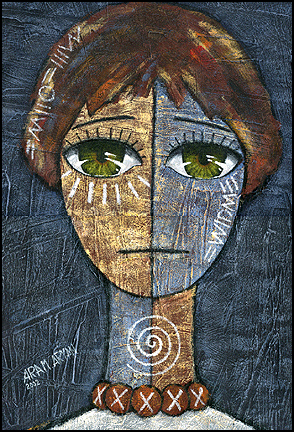

پذيرش > سایت نوشته ها > موانع حقوق جنسی زنان در ایران/افسانه پایدار


 موانع حقوق جنسی زنان در ایران/افسانه پایدار موانع حقوق جنسی زنان در ایران/افسانه پایدار
23 فروردین 1387 - - نسخه قابل چاپ
حق برخورداری از بهداشت و درمان جنسی یکی از اجزاء ثابت حقوق بشر است. در کنفرانس جهانی حقوق بشر در سال ۱۹۹۴، ۱۷۹ کشور توافقنامهای را در راستای توانمندسازی و دسترسی به خدمات بهداشتی و درمانی امضاء کردند. یکی از مفاد این توافقنامه تأمین بهداشت جنسی و ارائهی خدمات برای کنترل باروری، مراقبتهای باروری، خدمات درمانی در دوران حاملگی، زایمان و پس از آن بود. این بند به عنوان یکی از معیارهای اصلی ارزیابی توسعهی اقتصادی، اجتماعی و محیط زیستی به شمار آمد.
علیرغم چنین تعهداتی واقعیت امر این است که برخورداری از خدمات درمانی توسط زنان به مانند مردان، به سطح درآمد آنان بستگی دارد. این وابستگی به ویژه در کشورهای توسعه نیافته که خدمات درمانی جزو خدمات اجتماعی دولتی محسوب نمیشوند، به شدت مشاهده می شود. ایران نمونه ای از چنین کشورهایی است.
در اخباری که اخیراً منتشر شده است(۱)، محمد نوروزی خورشیدی، رئیس انجمن علمی تخصصی باروری و ناباروری ایران، اعلام کرد که هزینههای مربوط به بیماریهای ناشی از زایمان ۲۵ درصد افزایش خواهد یافت. او همچنین تعداد زوجهای نابارور را ۲ تا ۳ میلیون ذکر کرده که از این تعداد تنها ۱۵ درصد خدمات درمانی دریافت میکنند. هزینهی یک دورهی درمانی ۱/ ۵ میلیون تومان میباشد که بسیاری قادر به پرداخت آن نیستند.
در زمینهی مراقبتهای بارداری، با این که این خدمات در ایران از سال ۱۹۱۸آغاز شد، در حال حاضر تنها ۷۹ / ۸ درصد از مادران ایرانی تحت پوشش آن قرار دارند. نتایج یک پژوهش نشان میدهد که زنانی که از این مراقبتها برخوردار باشند، کودکانی به مراتب سالمتر به دنیا میآورند(۲).
گذشته از فاکتور درآمد، یکی دیگر از موانعی که منجر به نقض حقوق زنان در زمینهی برخورداری از بهداشت و درمان جنسی میشود، قوانین موجود در مورد سقط جنین است. دکتر آخوندی، رئیس پژوهشکده فناوریهای نوین علوم پزشکی ابن سینا اعلام کرد که در ایران طبق آمار موجود، سالانه ۸۰ هزار سقط جنین غیر بهداشتی و به عبارت دیگر ۲۰۰ مورد در روز انجام میشود(۳). او با بیان این مطلب خاطر نشان ساخت که این میزان نشاندهندهی آمار واقعی نیست چون بسیاری از موارد سقط بدون ثبت در جایی به طور مخفیانه انجام میشوند. آخوندی در تعریف سقط جنین غیربهداشتی میگوید: "منظور از سقط غیربهداشتی سقطی است که توسط افراد غیرمتخصص و افرادی که مهارتی در انجام این کار ندارند انجام میشود و حداقل استانداردهای لازم پزشکی این کار را رعایت نمیکنند."(۴) در واقع منظور او از سقط جنین غیربهداشتی، سقط جنین غیرقانونی است. طبق قوانین موجود در ایران که در سال ۱۳۸۴ در مجلس تصویب شده، سقط درمانی پس از تشخیص قطعی سه پزشک متخصص و تأیید پزشکی قانونی در مورد عقب ماندگی و یا ناقصالخلقه بودن جنین و در مواردی که جان مادر تهدید میشود، قبل از چهارماهگی مجاز است. در عمل چنین است که تشریفات قانونی تا آن زمان انجام نشده و به این ترتیب در صورت عدم سقط جنین، مادر و کودک دچار عواقب آن میشوند. این مورد غیر از موارد بسیاری است که زنان و دختران در چارچوب غیرشرعی حامله شده و خواهان سقط جنین هستند. نتایجی که سقط جنین غیربهداشتی برای زنان به بار میآورد، از جمله سقطهای ناقص، خونریزی، عفونت، پارگی، سوراخ شدن رحم و صدمات داخل لگن است که به دلیل غیرقانونی انجام شدن این عمل و ترس مادران از مراجعه به پزشک در بسیاری از موارد منجر به مرگ و یا عواقب وخیم دیگری میشود.
علاوه بر فاکتورهای اقتصادی و قانونی که مانع از دستیابی زنان در ایران به حقوق جنسی خود میشوند، یکی دیگر از عواملی که بهداشت جنسی زنان را به خطر میاندازد، عامل فرهنگی است. خشونت جنسی علیه زنان که در غالب موارد از سوی شوهر و شریک زندگی آنان اعمال میشود، وجوه گوناگونی دارد، از جمله کتک زدن زنان حامله، وادار کردن زنان به برآورده کردن خواستههای جنسی مردان و تن دادن زنان به آن، حتی اگر این امر برای زنان خطراتی در رابطه با ابتلاء به بیماریهای جنسی فراهم آورد؛ همچنین عدم استفاده از کاندوم از سوی مردان که میتواند منجر به حاملگی ناخواسته، انتقال بیماریهای مقاربتی و بیماری ایدز گردد. طبق نظر کارشناسان بینالمللی میزان گسترش این بیماری در میان زنان رو به افزایش است. یکی از دلایل برای این روند صعودی این بوده است که احتمال آلوده شدن زنان و دختران به عفونتهای مقاربتی چهار برابر مردان است(۵). آخرین آمار ایدز که در آبان ۱۳۸۶ منتشر شد(۶) حاکی از این است که در مجموع ۱۶۰۹۰ بیمار ایدزی در ایران ثبت شده است که از این تعداد، ۹۴۰ نفر را زنان تشکیل میدهند. این آمار به ویژه در مورد زنان تعداد بسیار کمتری از موارد واقعی را نشان میدهد، به این دلیل که زنان کمتر از مردان به درمانگاهها برای معالجهی خود مراجعه میکنند.
به این ترتیب در ایران، حقوق جنسی زنان نیز یکی دیگر از موارد حقوق بشر است که تحت تأثیر عوامل قانونی، اقتصادی و فرهنگی نقض گردیده و مانع توانمندی آنان میگردد. طبیعتا دستیابی به چنین حقی با مبارزه علیه قوانین ضد زن، تغییر مناسبات اقتصادی و انجام کار فرهنگی پیوند خورده است.
(1)ایسنا، ۷ اسفند ۱۳۸۶
(2)آفتاب، ۳۰ فروردین ۱۳۸۶
(3)خبرگزاری جمهوری اسلامی، ۲ دی ۱۳۸۶
(4)منبع بالا
(5)http://www.iranhiv.com/women1.htm
(6)www.iranhiv.com
شهرزاد نیوز
ارسال به
بالاترین
،
توییتر
،
فریندفید
،
فیسبوک
در همين بخش :
 یک خبر تلخ؟ یک قانونشکنی؟ یک تصمیم بخشنامهای جدید؟ یک خبر تلخ؟ یک قانونشکنی؟ یک تصمیم بخشنامهای جدید؟
چرا بایست به سکسوالیته پرداخت؟ / نفیسه آزاد
آزارجنسی خانگی؛ «قربانی» نه، «نجات یافته»
زنان، بزرگترین بازندگان بهار عرب
سانسور از دیدگاه جنسیتی/الهه امانی
ديگر بخش ها :
طرح یک میلیون امضا
|
مقالات
|
سایت نوشته ها
|
اخبار
|
گزارش كمپين
|
گفت و گو
|
علیه سکوت
|
كوچه به كوچه
|
نامه های شما
|
گزارش ویژه
|
گفتگو با اعضا
|
ویژه سالگرد کمپین
|
تصویر برابری
|
دل آرام علی
|
تریبون
|
مقالات
|
تاریخ شفاهی
|
خارج از چارچوب
|
کتابخانه
|
درباره کمپین
|
کمپین در شهرها
|
کمپین در بند
|
صدای تغییر
|
ویژه 22 خرداد
|
لایحه حمایت از خانواده
|
گالری
|
عشا مومنی
|
امیر یعقوبعلی
|
خدیجه مقدم
|
راحله عسگری زاده و نسیم خسروی
|
پروین اردلان،جلوه جواهری، مریم حسین خواه، ناهید کشاورز
|
زینب پیغمبرزاده
|
سعیده امین، سارا ایمانیان، محبوبه حسین زاده، ناهید کشاورز و همایون نامی
|
احترام شادفر
|
نسیم سرابندی زاده،فاطمه دهدشتی
|
وبلاگ مهمان
|
پرونده خرم آباد
|
دستگیری ها
|
مریم مالک
|
پرستو اللهیاری
|
مهرنوش اعتمادی
|
سمیه رشیدی
|
Other Languages
|
همراهان
|
«فراخوان کمپین ده روز با بهاره هدایت»
| English
|